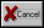
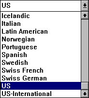
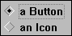
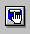
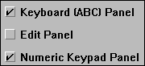
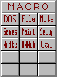

| My-T-Soft®: for Windows; Indestructible Keyboards and Indispensable Utilities; Version 1.80; User's Guide | ||
|---|---|---|
| Prev | Next | |
OK
The OK button will save all your changes.
CANCEL

The CANCEL button will ignore any changes you have made, and restore your previous configuration.
Pull-down Box

This is a Pull-down Box.
Radio Button

These are a Radio Buttons.
Active Application
The Active Application is always identified as follows:
It has the input focus (the blinking cursor).
The Caption (Window Title) bar is colored in the highlighted color.
Cursors
This is a Cursor.
Icons

This is an Icon.
Check-Buttons

These are Check-box Buttons.
Panels

This is an example of a My-T-Soft Panel.